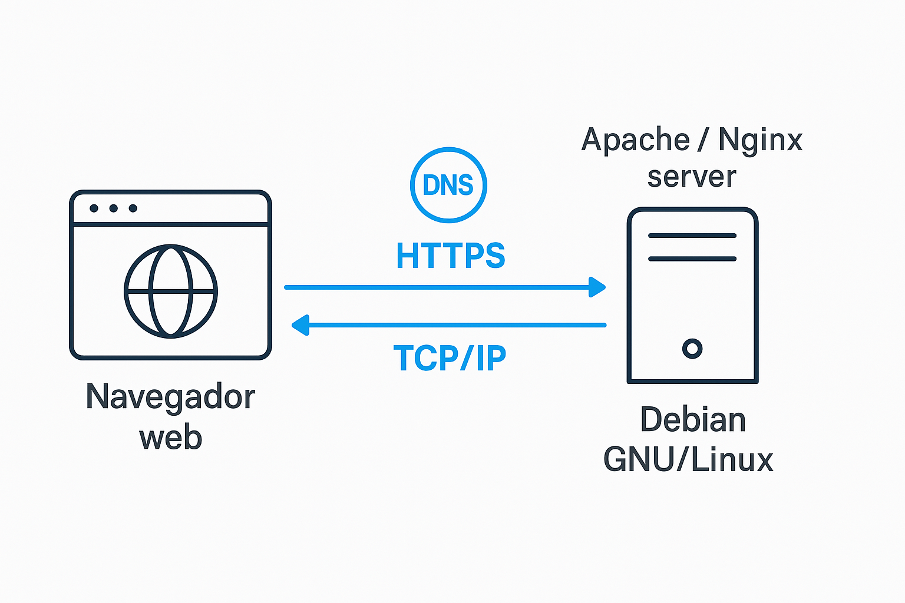

Introduction
Introducción
This project explains how a browser accesses a site like librebits.info, covering all network layers and involved technologies.
Este proyecto explica cómo un navegador accede a una web como librebits.info, cubriendo todas las capas de red y tecnologías implicadas.
The Network Stack
La Pila de Red
We follow the path from your browser to the server using protocols like DNS, TCP/IP and HTTP.
Seguimos el recorrido desde tu navegador hasta el servidor usando protocolos como DNS, TCP/IP y HTTP.
Accessing the Web
Accediendo a la Web
When someone enters a website URL, several steps happen behind the scenes:
Cuando alguien escribe la dirección de una web, ocurren varios pasos en segundo plano:
- DNS translates the domain name to an IP address.
- TCP/IP establishes a connection with the server.
- HTTP requests the HTML/CSS/JS content from the server.
- Web server (Apache/Nginx) sends the requested files.
- Linux (Debian/Ubuntu) runs the server and hosts the files.
- DNS traduce el nombre de dominio a una dirección IP.
- TCP/IP establece una conexión con el servidor.
- HTTP solicita el contenido HTML/CSS/JS al servidor.
- Servidor web (Apache/Nginx) envía los archivos solicitados.
- Linux (Debian/Ubuntu) ejecuta el servidor y aloja los archivos.
How is this page hosted?
¿Cómo está alojada esta página?
It is hosted using GitHub Pages (free static site hosting), and could also be served locally with Apache inside Docker.
Está alojada usando GitHub Pages (hosting gratuito de sitios estáticos), y también podría servirse localmente con Apache dentro de Docker.
Free Software vs Proprietary Tools
Software Libre vs Herramientas Privativas
This project was mostly built using free/open-source tools: VS Code, Git, Docker, Apache and GitHub Pages.
Este proyecto fue construido mayormente usando herramientas libres: VS Code, Git, Docker, Apache y GitHub Pages.
- Free tools: Ubuntu, Apache, HTML/CSS/JS
- Herramientas libres: Ubuntu, Apache, HTML/CSS/JS
- Non-free (used optionally): macOS, GitHub
- No libres (usadas opcionalmente): macOS, GitHub
Example: Apache on Debian
Ejemplo: Apache en Debian
To serve this webpage from your own Linux machine:
Para servir esta página desde tu propio equipo con Linux:
- Install Apache:
sudo apt install apache2 - Place your files in:
/var/www/html/ - Access via:
http://your-ip-address
- Instala Apache:
sudo apt install apache2 - Coloca tus archivos en:
/var/www/html/ - Accede desde otra máquina:
http://tu-dirección-ip